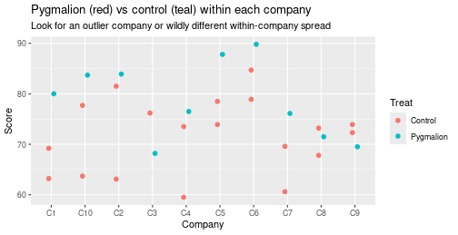

This is a capstone: how to actually do an analysis end-to-end, both for inference (is something really going on in the data?) and for prediction (get the best labels you can) — in a modern way, using an LLM as a fast consultant you then verify.
The traditional move for a non-statistician is to hire a statistical consultant, because choosing the model, the test statistic, and spotting the limitations are genuinely hard. But consultants are expensive, disagree with each other, and are “quite often out to lunch.” An LLM is a stand-in that’s instant and cheap — and also frequently wrong. The skill is the same either way: get a proposal, then check it isn’t nonsense.
The steps, whoever (or whatever) proposes them:
An LLM will happily do steps 1–4 and skip 5 entirely unless told. Blindly plugging in data and taking the number it prints is bad; ask it to do model checking and it usually will.
The Pygmalion effect: if you tell a teacher their students are special, do the students actually do better? The experiment: within each of 10 army companies, one platoon was randomly given the “Pygmalion” treatment (the commander was told those soldiers had scored exceptionally), the others were controls; later, everyone took a skills test.
library(Sleuth3) # case1302 = the Pygmalion data
d <- case1302
str(d)## 'data.frame': 29 obs. of 3 variables:
## $ Company: Factor w/ 10 levels "C1","C10","C2",..: 1 1 1 3 3 3 4 4 5 5 ...
## $ Treat : Factor w/ 2 levels "Control","Pygmalion": 2 1 1 2 1 1 2 1 2 1 ...
## $ Score : num 80 63.2 69.2 83.9 63.1 81.5 68.2 76.2 76.5 59.5 ...The naive analysis — ignore companies, just compare the two groups:
mean(d$Score[d$Treat == "Pygmalion"]) - mean(d$Score[d$Treat == "Control"])## [1] 7.068421About +7 points. This is the difference-of-means test from hypothesis testing — but it treats every soldier as independent and ignores that they’re grouped in companies, which may differ systematically. That’s exactly what makes this a textbook example, and it’s the first thing to flag if an LLM proposes it.
The fix — account for the company. A consultant (human or LLM) offers two options: the classical randomized block design, or random effects — the multilevel model from earlier. As a random-effects model, each company gets its own offset drawn from \(\mathrm{Normal}(0, \sigma_{\text{company}})\):
library(lme4)
m <- lmer(Score ~ Treat + (1 | Company), data = d)
summary(m)$coefficients## Estimate Std. Error t value
## (Intercept) 71.57757 1.851367 38.662014
## TreatPygmalion 7.12243 2.562611 2.779365as.data.frame(VarCorr(m))[, c("grp", "sdcor")]## grp sdcor
## 1 Company 3.392582
## 2 Residual 6.550097The treatment effect is 7.12. Is that a lot? The raw number means nothing until you compare it to the noise — the residual SD, 6.55 (how much two soldiers in the same company, same treatment, differ). The Pygmalion effect is about one within-group standard deviation — genuinely large.
Model checking. We fit coefficients, but haven’t asked whether the data looks like the model. The model claims (a) company offsets are Normal — falsified by a wild outlier company — and (b) the residual spread is constant across companies — falsified if one company’s platoons are bunched and another’s are wildly spread. With only ~3 platoons per company you mostly look for gross violations:
library(ggplot2)
ggplot(d, aes(x = Company, y = Score, color = Treat)) +
geom_point(size = 2, position = position_dodge(width = 0.3)) +
labs(title = "Pygmalion (red) vs control (teal) within each company",
subtitle = "Look for an outlier company or wildly different within-company spread")
No company flies off the chart and the spreads are comparable, so the model’s assumptions are at least not grossly violated. (A gross violation would be one company’s points an order of magnitude more spread than the rest.)
A workflow hazard. The LLM computed the answer before we chose the model, which quietly invites the garden of forking paths: if you like the first result you report it, if not you “try another model” — inflating false positives. For a serious study, pre-commit to the analysis before seeing the outcome.
A subtler use of the workflow: stress-testing someone else’s claim. A prominent PNAS study on active learning reports (on standardized scores) that active classrooms lower the feeling of learning by ~0.56 SD but raise test performance by ~0.46 SD. (For scale: the Pygmalion effect was ~1 SD, so this is about half as big.)
One worry: test performance is measured by a single test. The model treats the test as fixed — the only thing that can change a prediction is switching active vs. passive. But had they given a different, equally fair test, would the 0.46 survive? The honest way to encode that doubt is to add a random effect for the test and see how much it widens the uncertainty. (This is an uncharitable-but-not unfair reading: adding “what if another test?” would shrink the effect in almost any small study — but a headline result in a top journal invites it.)
Let’s simulate. Twelve instructor-semester groups, each giving one test (so “active” is assigned at the group level, and each group carries its own test-level offset). The effect is hard-coded at 0.46; the test-to-test SD is a judgment call (~0.5 SD, reasoned from a plausible class average wandering over a few points):
set.seed(1626)
sim_once <- function(n_groups = 12, n_per = 25,
beta_active = 0.46, sigma_test = 0.5, sigma_resid = 1) {
grp <- data.frame(group = factor(1:n_groups),
active = rep(0:1, length.out = n_groups),
u = rnorm(n_groups, 0, sigma_test)) # per-test offset
dat <- grp[rep(1:n_groups, each = n_per), ]
dat$score <- beta_active * dat$active + dat$u + rnorm(nrow(dat), 0, sigma_resid)
dat
}
dat <- sim_once()Fit it two ways. Plain linear regression treats all 300 students as independent; the multilevel model knows they cluster by test:
# Ignores test-level clustering -> SE too small.
ci_lm <- confint(lm(score ~ active, data = dat))["active", ]
# Accounts for the test as a random effect -> honest (wider) SE.
m_re <- lmer(score ~ active + (1 | group), data = dat)
ci_lmer <- confint(m_re, parm = "active", method = "Wald")
rbind(linear_regression = ci_lm, random_effect = ci_lmer)## 2.5 % 97.5 %
## linear_regression 1.0385482 1.487870
## active 0.7849758 1.741443The random-effect interval is wider — because “active” was really varied over only a handful of tests, not 300 independent students, so there’s far less information about it than a naive regression assumes. One draw could be a fluke, so repeat the whole experiment many times (as in the lecture) and look at the average interval width, plus how much the estimate itself bounces around:
widths <- replicate(200, {
dd <- sim_once()
fit <- lmer(score ~ active + (1 | group), data = dd)
w_lm <- diff(confint(lm(score ~ active, data = dd))["active", ])
w_lmer <- diff(confint(fit, parm = "active", method = "Wald")[1, ])
setNames(c(w_lm, w_lmer, unname(fixef(fit)["active"])),
c("width_lm", "width_lmer", "estimate"))
})
c(mean_width_lm = mean(widths["width_lm", ]),
mean_width_lmer = mean(widths["width_lmer", ]),
sd_of_estimate = sd(widths["estimate", ]))## mean_width_lm mean_width_lmer sd_of_estimate
## 0.5008857 1.2197142 0.2989891The random-effect interval is systematically more than twice as wide, and the estimate wobbles from run to run by an amount comparable to the nominal 0.46 effect itself. An effect that looks comfortably significant under lm can slide toward non-significant once you admit the test itself was a draw from a population of possible tests. That is the whole point of the audit — and it’s why the lecturer “doesn’t really believe it would come out the same if you ran it again.”
When the goal is prediction, not inference, the considerations change.
Predicting “irrigation need” from soil/weather columns. The loop is agent-driven — you direct, it codes — but the moves are classic:
"Load train.csv/test.csv, fit logistic regression, report validation accuracy."
-> ~84%.
"Clip each feature to its 1st/99th percentile (outliers) and refit."
-> no change.
"Plot each feature's distribution." # find non-Gaussian columns
"Fit a random forest instead." -> ~98%.
"Bucket field_area into low/medium/high and add it." # feature engineering
"Stack: logistic regression on top of the RF and LR outputs." # ensembling
-> another fraction of a percent.Random forests do a lot of this (nonlinear cutoffs, interactions) automatically, which is why they jumped from 84% to 98% with no hand-holding. Squeezing the last fractions via feature engineering and stacking is exactly what wins Kaggle leaderboards — and at billion-user scale, a 0.01% gain is real money.
Classify r/uwaterloo vs. r/UofT posts. Scrape both, then remove the giveaway keywords — but thoughtfully: drop “Toronto”/“Waterloo” and obvious course-code tells, yet keep “geese” (a fair, genuine Waterloo signal, not a cheat). Then let the LLM classify zero-shot. Watch for prompt leakage: keep the answer key in a separate file, don’t let the labels sit in the model’s context, and verify in Python, not in the model’s head. Result: ~87% — and few-shot probably wouldn’t add much here. (This continues the workshop in classifying text with an LLM.)
Whether the consultant is human or an LLM, the discipline is identical:
The LLM makes the mechanics fast. It does not make the judgment for you.